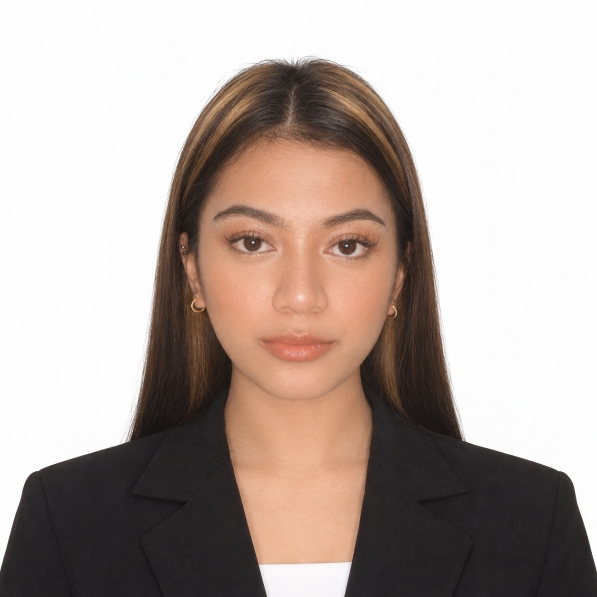

01 / SOUND
Music
Listening to music and discovering new sounds.
↗✳ WELCOME TO MY CREATIVE SPACE
A little space where I share my interests, creative journey, and the things I love making.
Explore my work ↗01 — GET TO KNOW ME

HELLO, THERE!
I'm a Multimedia Studies student at the University of the Philippines Open University. I enjoy exploring creativity through design, video editing, and other forms of multimedia.
I'm always curious about learning new things and finding creative ways to turn ideas into something meaningful.
02 — THE LITTLE THINGS
Some things that inspire me and make me happy.
Listening to music and discovering new sounds.
↗Watching films and getting lost in stories.
↗Creating digital art, designs, and visuals.
↗Exploring ideas and experimenting with new things.
↗Creating is my way of making sense of the world.
✳03 — THINGS I'VE CREATED
A collection of my creative works and experiences.
Exploring AI-assisted content creation through video editing and visual storytelling.
View Project ↗A documentary project that allowed me to explore storytelling through film.
Watch Film ↗04 — LET'S CONNECT
Feel free to reach out. I'd love to connect!